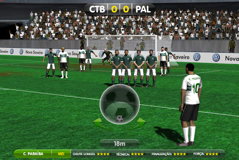

Mario Toledo
Mario Toledo
My history with game development
It's been a long time since I wanted to create a blog to write about the things that are daily present in my career as a computer scientist and a software developer. I finally took enough courage to priorize this, since I have the need to express myself for the things that happens around me.
I started this post by writing a brief story of my relation with computer science, software development and game development. But it happens that I have so many things that I did in the last 12 years, that I decided to focus on game development (as this was what got me into computer science, in the end).
For those who doesn't know me enough, my name is Mario, I'm a computer scientist (with a master degree in computer engineering), and I work with software development for over than 10 years (at the time this post is published, it will make 12 years since I first joined IBM, where I started to code professionally). Right now, I'm a Full Stack Developer, focused on web development with Javascript/Python and game development with Unity, but my connection with coding and game development comes from a long, long time ago.
I was 12 when I created my first HTML page by writing every single tag by myself. At the time, there were no IDEs, nor even enough softwares to support HTML pages creation. Windows Notepad was your best friend, and you could, at most, use Microsoft FrontPage to generate some visual interfaces (but, for those who knows FrontPage as much as I do, it can be completly destructive if you miss a single entry in the software)
At the same age, I started to get really interested about game development. I remember downloading RPG Maker 2000 (at a 1 kbps rate) and starting to create some RPG games for my friends to play. Of course, at the time, my games were as simple as "go there and defeat the villain that destroyed your village". But this got really interesting when I started to create variables, conditional flows, loops, and much more computional tools that RPG Maker offers.
At the age of 14, I started to learn Visual Basic by myself. A friend of my father knew that I was getting interested about coding, and lended me a book named "Learn Visual Basic 6 in 21 days". My next vacations were all about studying the book and doing some exercises in a notebook.
I remember that I created a lot of (useless) form applications, and even some games for my friends to play. One of them was a game that you had to control how much beer you should drink, go out with your car and choose the right options to not be stopped by the police.

When I was 15, I was really addicted to Tibia (as it was the only game that could run in my family's computer). A friend of mine taught me how to connect to private Tibia servers, named OT Server (Open Tibia Server), or OTserv, and I really wanted to learn how to create my own Tibia server. After some days, I had the simplest Tibia server running in my computer for my friends to play (but only on weekends, because we had a dial-up connection).
I got really deep into OT Server management, and started to learn, in foruns, about multiplayer connection (with LUA script) and web development for registration (with PHP and MySql). It ended that I created a whole custom server, named Turbo Tibia, with an online registration page, a forum, custom maps, custom NPCs, custom quests... a whole new Tibia game for the players. I got a rate of 30-40 daily online players, and I was making so many plans to develop my server.

By the way, looking at the images now, it didn't look like I was the greatest of Game Masters. Just for context: some players used to enter my server to ask for items and money, and I used to summon a monster named Santa Claus (that I custom created) to kill them.

Or even trap them inside a house with a lot of rats.
All ended when my father received our phone bill, and almost killed me when discovered how much connection I spent in the month.
All this background helped me to decide for the Computer Science course when I finished school. The college taught me not only the fundamentals of computer science, which I consider essential for anyone who wants to be a good programmer, but also encouraged me in several extracurricular projects that provided great learning in entrepreneurship and game development.
I remember that I joined a summer course for XNA, in 2007. For those who doesn't know, XNA was a game development framework that allowed to create games for Windows and, later, for Xbox. This was way before Unity got popular, and I got really hyped to develop my own games freely.
The first game that I created in XNA was a racing game using Mario and Luigi sprites. My idea was something really similar to Rock & Roll Racing, but using Nintendo sprites (come on guys, it was 2007 and we did't have much gaming assets over the internet. I badly knew how to use Photoshop - and I probably still doesn't know).

XNA became my main framework for game development since then. I remembered that I was attending Physics 101 classes, and the teacher asked us to code a Battleship game, but with physics simulation for projectiles and kinematics. Of course that my eyes shined and, for some reason that I don't why, I decided to turn into a dodgeball-in-water game. I got some free assets on the internet, and coded in 1 week. I got a B+ for the work (but he still wanted to see a Battleship game).
In 2009, there was a competition named XNA Challenge, where participants should create a game from a specific theme, using XNA, in 1 month. I had a friend in college who liked to draw, and we joined the competition. I don't really remember the theme, but we created a dancing game named "Malacobaco", where you control a guy who earned money by dancing in the streets. I suppose the guys from the challenge didn't like the theme, and we didn't pass for the final stages of the competition.
In the same year, my college decided to promote a competition using a game created by Computer Science students. I got into the project alongside with some other students and a teacher of us (who is one of the researchers in the game lab for Poli - USP, today), and we created a game, using Game Maker 7.0, where the players had to dock a boat using a radar. It seems really simple, but things got complicated as the user advanced on each level, having to deal with rocks, wind and the rapid of the river. In the day of the competition, 40 participants, outside the college, were able to compete and try to win a Nintendo Wii. A local TV also came in the college to interview us and know about game development.

In late 2010, I was so pissed off with my current job, and decided to join a gaming company no matter what. The thing is, there were not many gaming companies in Brazil in 2010, so I entered Abragames website (a brazilian association for gaming companies) and sent my résumé for every company registered there. Luckly, I received a contact for one of them, Insolita Studios, had my interview and got into the company. This is where I started to code with Unity (2.0 version at the time), and helped to create a game named Game Futebol, launched for web browsers and iOS users.
Sadly, the company had to dismiss all employees after losing a contract, and I had to find another job for myself as quick as posible. I started coding at a mobile app company, as I thought it was the closest that I could get to game development, and I started to create some distance from professional game development. After that, I really got deep into web development, and, besides the fact that I was still participating in some Game Jams, I just returned to the game development scenario in 2017, where I joined a gaming company again. I went back to create games in Unity, and even having some experience with Unreal. In 2020, I joined a casino gaming company to work with Phaser.js framework, what also got me a freelance position in a spanish company for some other browser games. I even had the opportunity to visit GDC, in 2019, one of the best experiences I had with game development (and something that I want to talk about in other post).
Also, I had a great experience by going back to the college where I graduated to have a workshop of Phaser.js for new Computer Science students.
In this meantime, I made a lot of personal games. Some of them even got reviewed by people over the internet, from another countries. But, as much as I still got connected with game development, I know that this is a difficult area where you won't always be able to keep working professionally or keep developing yourself, specially in Brazil. There are few opportunities, and many of them doesn't pay as much as other software development areas pay. I got myself away for 7 years from the game development industry, and I feel really sad by this lost time. I also have so much talented friends, who worked for the gaming industry, that are currently working with web development.
I suppose that, if you do love game development as much as I do, there is only one way to keep in the industry: using your free time to study and develop personal projects. And I mean studying and developing as much as you can. This is how I got here, and this is how I see other professionals doing. If you do so, and keep improving your portifolio, keep participating in game jams, making contacts and watching for the opportunities, then things will make it naturally. Nowadays, it is really easy to find open jobs in the gaming industry (a good start would be to check for the Hitmarker website).
What about you? What is your history with game development? Feel free to add a comment below!